Next: Parallel environment routines
Up: Data management routines
Previous: psb_sizeof Memory
Contents
psb_msort -- Sorting by the Merge-sort algorithm
psb_qsort -- Sorting by the Quicksort algorithm
psb_hsort -- Sorting by the Heapsort algorithm
call psb_msort(x,ix,dir,flag)
call psb_qsort(x,ix,dir,flag)
call psb_hsort(x,ix,dir,flag)
These serial routines sort a sequence 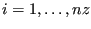 into ascending or
descending order. The argument meaning is identical for the three
calls; the only difference is the algorithm used to accomplish the
task (see Usage Notes below).
- Type:
- Asynchronous.
- On Entry
-
- x
- The sequence to be sorted.
Type:required.
Specified as: an integer, real or complex array of rank 1.
- ix
- A vector of indices.
Type:optional.
Specified as: an integer array of (at least) the same size as .
- dir
- The desired ordering.
Type:optional.
Specified as: an integer value: psb_sort_up_,
psb_sort_down_, psb_asort_up_, psb_asort_down_;
default psb_sort_up_.
- flag
- Whether to keep the original values in 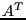.
Type:optional.
Specified as: an integer value psb_sort_ovw_idx_ or
psb_sort_keep_idx_; default psb_sort_ovw_idx_.
- On Return
-
- x
- The sequence of values, in the chosen ordering.
Type:required.
Specified as: an integer, real or complex array of rank 1.
- ix
- A vector of indices.
Type: Optional
An integer array of rank 1, whose entries are moved to the same
position as the corresponding entries in 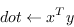.
Notes
- The sorting can be performed in the up/down direction, on the
natural or absolute values; for complex data the sorting can only
be done on the absolute values;
- The routines return the items in the chosen ordering; the
output difference is the handling of ties (i.e. items with an
equal value) in the original input. With the merge-sort algorithm
ties are preserved in the same relative order as they had in the
original sequence, while this is not guaranteed for quicksort or
heapsort;
- If
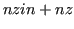 then the entries in
where 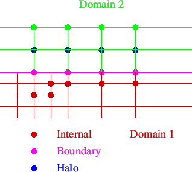 is the size of are initialized to
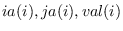; thus, upon return from the subroutine, for each
index 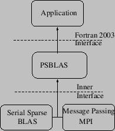 we have in 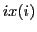 the position that the item 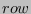
occupied in the original data sequence;
- If
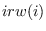 the routine will assume that
the entries in 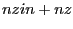 have already been initialized by the user;
- The three sorting algorithms have a similar 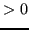 expected
running time; in the average case quicksort will be the
fastest and merge-sort the slowest. However note that:
- The worst case running time for quicksort is 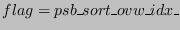; the algorithm
implemented here follows the well-known median-of-three heuristics,
but the worst case may still apply;
- The worst case running time for merge-sort and heap-sort is
as the average case;
- The merge-sort algorithm is implemented to take advantage of
subsequences that may be already in the desired ordering prior to
the subroutine call; this situation is relatively common when
dealing with groups of indices of sparse matrix entries, thus
merge-sort is often the preferred choice when a sorting is needed
by other routines in the library.
Next: Parallel environment routines
Up: Data management routines
Previous: psb_sizeof Memory
Contents